lbtecoeff module¶
-
lbtecoeff.calculate_hall_carrier_concentration(hall)¶ Calculates the Hall carrier concentration 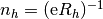
Parameters: hall : ndarray
Dimension: (N,M,3,3)The Hall tensor 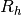 in units of for N temperature and M chemical potential samplings.
Returns: ndarray
Dimension: (N,M,3,3)The Hall carrier concentration in units of

-
lbtecoeff.calculate_hall_factor(n, nh)¶ Calculates the Hall factor

Parameters: n : ndarray
Dimension: (N,M,3,3)The calcalated carrier concentration in for N temperature and M chemical potential samplings in units of
 .
.n : ndarray
Dimension: (N,M,3,3)The Hall carrier concentration in for N temperature and M chemical potential samplings in units of
.Returns: ndarray
Dimension: (N,M,3,3)The Hall factor.
-
lbtecoeff.numerick(tr, chempots, temperatures, bs=None)¶ This routines calculates the transport coefficients according to the tensors defined in
full_k_space_analytic()Parameters: tr : object
A Transport() object.
chempots : ndarray
Dimension: (N)The N chemical potentials in eV on which to calculate the transport coefficients.
temperature : float
Dimension: (M)The M temperatutes in K.
bs : ndarray, optional
Dimension: (I,J)The energy dispersion in eV for the charge carriers for I bands and J k-points. If not given, it defaults to the Bandstructure() object stored in tr.
Returns: sigma, seebeck, lorenz : ndarray, ndarray, ndarray
Dimension: (M,N,3,3)Returns the electrical condcutivity, Seebeck coefficient and Lorenz tensor for M temperature and N chemical potential steps in units of
 ,
,
 ,
,
 .
.Notes
This routine accepts a predetermined array containg the relaxation time sampled at different carrier energy steps. When the evaluation of the intergrals are executed the carrier energy dispersion, velocity and scattering array is either interpolated on the fly simultanously (if transport_integration_method is “cubature”) or only the scattering array is interpolated on all energies stored in bs and then the integrals are evaluated statically (if transport_integration_method is “trapz”, “simps”, “romb”, “tetra” or “smeared”). The former method can also be used in the case where the scattering array is pretetermined by setting transport_use_scattering_ontfly in the general configuration file to True.
-
lbtecoeff.spherical_closed(tr, eta, bs, tau0_t, temperature)¶ This routines calculates the spherical and spherical Fermi integrals for the transport coefficients.
Parameters: tr : object
A Transport() object
eta : float
The reduced chemical potential
bs : object
A Bandstructure() object containing the dispersion relations of the N included bands
tau0_t : (N,M) ndarray
The relaxation time approximation (RTA) prefactors (tau0) in units of fs for the N bands and M defined scattering mechanisms. This is converted to the r factor in order to use the closed Fermi integrals from tau0
temperature : float
The temperature in K.
Returns: tupple : ndarray, ndarray, ndarray, ndarray, ndarray, ndarray
Dimension: (3,3), (3,3), (3,3), (3,3), (3,3), (3,3)The electrical conductivity, Seebeck coefficient, Lorenz number, Hall coefficient (big R, where the small Hall factor is divided by the charge carrier concentration) and charge carrier concentration for n and ptype carriers in units of
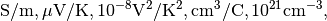
respectively.
See also
setup_scattering,find_r_from_tau0,spherical_numericNotes
The execution of this method needs currently needs the effective mass tensor to be isotropic and only one scattering mechanism can be used per band. This method is selected by setting transport_method to “closed” in the general configuration file.
-
lbtecoeff.spherical_numeric(tr, eta, bs, tau0_t, temperature)¶ The solution of the energy integrals for the BTE RTA for a spherical dispersion.
Parameters: tr : object
A Transport() object.
eta : float
The reduced chemical potential.
bs : object
A Bandstructure() object containing the energy dispersions for the N bands.
tau0_t : (N,M) ndarray
The relaxation time approximation (RTA) prefactors (tau0) in units of fs for the N bands and M defined scattering mechanisms.
temperature : float
The temperature in K.
Returns: tupple, ndarray, ndarray, ndarray, ndarray, ndarray
Dimension: (3,3), (3,3), (3,3), (3,3), (3,3), (3,3)The electrical conductivity, Seebeck coefficient, Lorenz number, Hall coefficient (big R, where the small Hall factor is divided by the charge carrier concentration) and charge carrier concentration for n and ptype carriers in units of
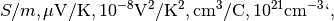
respectively.
Notes
This routine is the same as
spherical_closed()except here we solve the Fermi intergrals numerically. This allows to use concatenated scattering mechanisms for each band. Otherwise the approximations and requirements are similar. The method is selected by setting transport_method to “numeric”.The transport coefficients are defined as
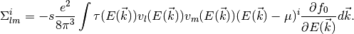
Using the fact that 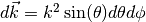 we get
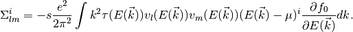
For spherical bands 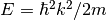. We also use
 . Furthermore we assume that our crystal is
isotropic and cubic, such that 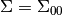.
Then 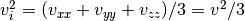 and the
expression above simplifies to
. Furthermore we assume that our crystal is
isotropic and cubic, such that 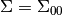.
Then 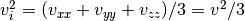 and the
expression above simplifies to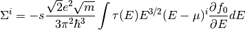
And we have a very manageble integral over energy. Here, we have assumed that
 can be expressed in terms of
energy instead of the wave vector. A similar procedure can be
used to obtain energy integrals for other dispersion relations
than spherical. As opposed to
can be expressed in terms of
energy instead of the wave vector. A similar procedure can be
used to obtain energy integrals for other dispersion relations
than spherical. As opposed to spherical_closed()we here want to solve the integrals numerically (in order to be able to use composite) and thus want to simplify
the mathematical operations in the integrands as much
as possible. Since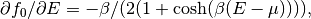
where 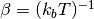 we get
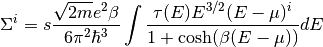
Notice now that there is a factor of 1/2 difference in front of these integrals compared to the ones in
spherical_closed()due to the expansion of the derivative of the Fermi function with respect to energy. The factor accounts for
spin degeneracy, otherwise 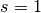 and is set to True or False
for each band with the parameter spin_deg in the bandstructure
configuration file.
accounts for
spin degeneracy, otherwise 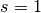 and is set to True or False
for each band with the parameter spin_deg in the bandstructure
configuration file.It is customary to introduce the dimensionless energy 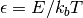 and chemical potential 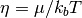. Doing this we obtain
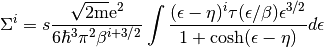
The carrier density
 can be calculated using
can be calculated using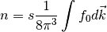
Depending on what kind of scattering models that is chosen, the rescaling of
needs to be performed for a
particular scattering model in order to pull the correct
 factor outside the integral.
factor outside the integral.In order to obtain the correct units the equation above for each transport coefficient have been implemented as
Electrical conductivity:
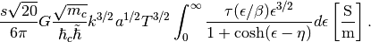
One usually set
.
Seebeck coefficient: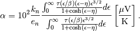
Lorenz number:
![L=\left(\frac{k_n}{e_n}\right)^2\left(
\frac{\int_0^{\infty}\frac{
\tau(\epsilon/\beta)(\epsilon-\eta)^2
\epsilon^{3/2}}{1+\cosh(\epsilon-\eta)}
d\epsilon}{\int_0^{\infty} \frac{
\tau(\epsilon/\beta)\epsilon^{3/2}}
{1+\cosh(\epsilon-\eta)}d\epsilon}-
\left(\frac{\int_0^{\infty}\frac{
\tau(\epsilon/\beta)(\epsilon-\eta)
\epsilon^{3/2}}{1+\cosh(\epsilon-\eta)}
d\epsilon}{\int_0^{\infty}\frac{
\tau(\epsilon/\beta)\epsilon^{3/2}}
{1+\cosh(\epsilon-\eta)}d\epsilon}\right)^2
\right) \left[10^{-8}\frac{\mathrm{V^2}}
{\mathrm{K^2}}\right].](_images/math/1dd14d453ae49625797b5cf24137cb4f3ba0593c.png)
Hall coeffcient:
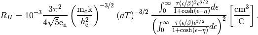
Carrier concentration:
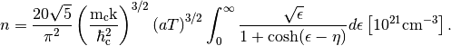
From these, the Hall carrier concentration and Hall factor,
 can be calculated
can be calculated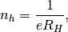
and
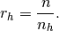
The multiband expressions are accordingly (using
 as the band index)
as the band index)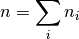
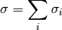
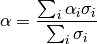
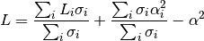
The units on the rest of the variables are
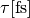The relaxation time given in fs.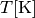The temperature given in K. The effective mass factor, e.g.
The effective mass factor, e.g. .
.Furthermore, the coefficients that sets the correct scaling is defined as
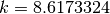The coefficient of the Boltzmann constant. The coefficient for the normalized (e/h) electron charge.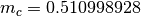The coefficient of 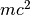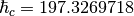The coefficient of 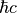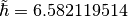The coefficient of 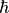:math::G = 7.7480917346The coefficient of the conductance quantum
The coefficient for the normalized (e/h) electron charge.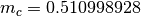The coefficient of 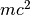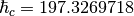The coefficient of 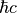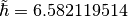The coefficient of 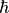:math::G = 7.7480917346The coefficient of the conductance quantumWarning
ONLY VALID FOR SPHERICAL ENERGY DISPERSIONS AND SCATTERING MODELS
Todo
ADD POSIBILITY TO USE DIFFERENT EFFECTIVE MASSES ALONG DIFFERENT DIRECTIONS
References
-
lbtecoeff.sphericale(tr, eta, temperature, bs, tau0, method)¶ This is a wrapper for all the spherical Fermi integrals.
Parameters: tr : object
A Transport() object
eta : float
Contains the reduced chemical potential.
temperature : float
Contains the temperature in K.
bs : object
Bandstructure() object containing the band structure.
method : {“numeric”, “closed”}
How to evaluate the Fermi integrals.
“numeric”: solve the Fermi integrals usingnumerical integration“closed”: solve the closed Fermi integrals(exact analytic expressions)Returns: tupple: ndarray, ndarray, ndarray, ndarray, ndarray, nadarray
Dimension: (3,3), (3,3), (3,3), (3,3), (3,3), (3,3)The electrical conductivity, Seebeck coefficient, Lorenz number, Hall coefficient (big R, where the small Hall factor is divided by the charge carrier concentration) and charge carrier concentration in units of
respectively.
Notes
All integrals in this function is evaluated over energy and not k-points (one of the most usual procedures for solving the Boltzmann transport integrals)